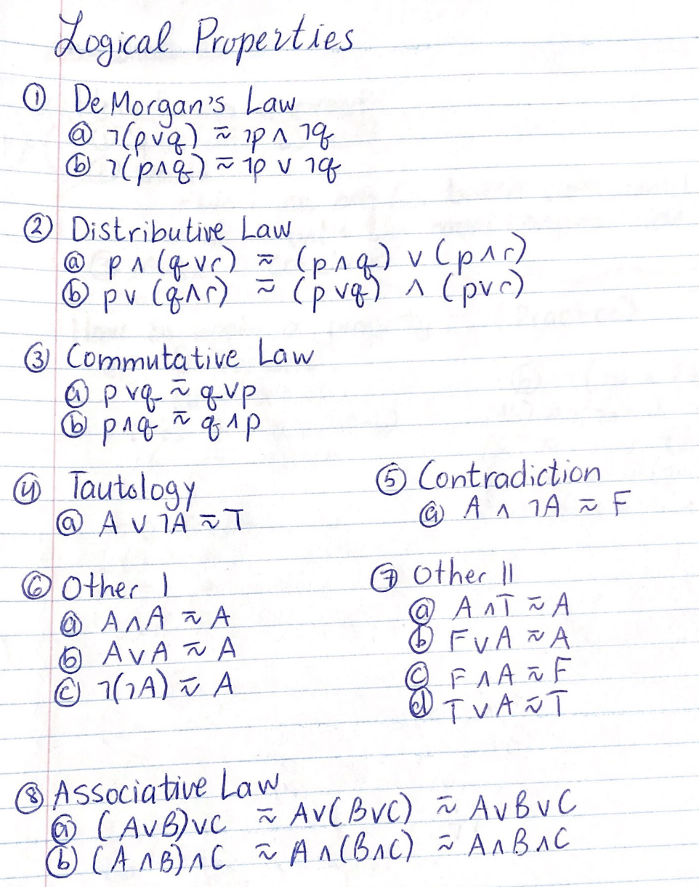

| 27 | 26 | 25 | 24 | 23 | 22 | 21 | 20 | 128 | 64 | 32 | 16 | 8 | 4 | 2 | 1 |
| Bit: | Byte: |
- a single binary digit (0 or 1) |
- 8 bits - can be used to represent a letter/symbol - 256 diff combos - largest possible val: 255, smallest: 0 |
|---|
| Hex | 0 | 1 | 2 | 3 | 4 | 5 | 6 | 7 | 8 | 9 | A | B | C | D | E | F | Binary | 0 | 1 | 2 | 3 | 4 | 5 | 6 | 7 | 8 | 9 | 10 | 11 | 12 | 13 | 14 | 15 |
|---|
| 163 | 162 | 161 | 160 | 4096 | 256 | 16 | 1 |
To identify which number system, we use a subscript:
(Note: you don't need leading zeros in binary)
110 01112, 6410, A416
Add up all the values with 1s:
1001 1011 -> 1 + 2+ 8 + 16 + 128 = 15510
binary -> decimal -> ASCII
0010 1001 -> 1 + 8 + 32 = 41 = ')'
binary -> decimal -> hex
0110 0110 -> 2 + 4 + 32 + 64 = 10210 = 6616
TRICK: split in half
0001 0111 -> [0001 = (1)], [0111 = (7)] -> 17
0011 1010 -> [0011 = (3)], [1010 = (10)] -> 3A
Turn on all powers of 2 that are used
42 -> 0010 1010
Look in chart
409710 -> 100116
111110 -> 45716
AA0 -> 256(10) + 16(10) + 16(0) = 2720
If two digits - split (trick)
FF -> [F = 1111][F = 1111] = 255
hex -> decimal -> binary
or just hex -> binary (cut in half)
23 -> [2 - 0010][3 - 0011] = 0010 0011
AB -> 10101011
Rules:
0 + 1 = 1
1 + 1 = 0, CARRY 1
1 + 1 + 1 = 1, CARRY 1
111 111
1011 0111
+0111 0011
-----------
1 0010 1010
3 logical connectives:
AND = ∧ = &&
OR = ∨ = ||
NOT = ¬,˜ = !
# of COLS in a truth table:
| A | B | C | ¬C | A∨B | (A∨B)∧¬C | ¬((A∨B)∧¬C) |
|---|---|---|---|---|---|---|
| 1 | 1 | 1 | 0 | 1 | 0 | 1 |
| 1 | 1 | 0 | 1 | 1 | 1 | 0 |
| 1 | 0 | 1 | 0 | 1 | 0 | 1 |
| 1 | 0 | 0 | 1 | 1 | 1 | 0 |
| 0 | 1 | 1 | 0 | 1 | 0 | 1 |
| 0 | 1 | 0 | 1 | 1 | 1 | 0 |
| 0 | 0 | 1 | 0 | 0 | 0 | 1 |
| 0 | 0 | 0 | 1 | 0 | 0 | 1 |
English sentences can be converted to logical operators to determine truth value.
Steps
1) let statements
2) determine propositions
3) determine logical operators
Example:
The cat is not brown or the truck flies.
1) let p represent "the cat is brown"
2) let q represent "the truck flies"
¬p ∨ q
SINCE trucks can't fly, THEREFORE true when the cat is not brown
Logical: and, or, not
Arithmetic: +, -, *, /, %
Assignment: =
Relational: <, >, <=, >=, !=, ==
I am not typing this out
